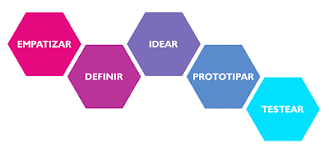

Empatizar
Desde esta primera etapa se coloca al usuario al centro de todo.
En este primer momento es importante “ponerse en los zapatos del otro”. En esta fase, es necesario escuchar abiertamente al usuario.
Aquí surgen algunas de las preguntas más esenciales:
¿Qué necesita el usuario?
¿Cómo podemos ayudarle?
¿Cómo podemos mejorar y facilitar su vida?
Lo más importante de este primer momento se relaciona con la inteligencia emocional: necesitamos ser conscientes de que trabajamos con otras personas, no con máquinas. Necesitamos ser capaces de escuchar con empatía y respeto al otro.
Te recomendamos también leer nuestro artículo “El poder de la empatía en UX”.

Definir
En esta fase necesitamos concentrarnos en los aspectos esenciales surgidos de la primera fase. Es un proceso de “limpieza” que pretende definir qué problema solucionaremos. Aquí es importante delimitar los esfuerzos para enfocarnos en algo concreto.
Idear
Es una de las fases de mayor libertad creativa.
Podríamos decir que es la parte más “lúdica” de nuestro proceso. Aquí, todas las ideas (por extrañas que en principio parezcan) son bienvenidas.
La imaginación tiene un lugar privilegiado en esta etapa. En este momento esbozamos múltiples soluciones, conceptos, propuestas. Lo que surja en este momento será fundamental en los siguientes pasos.
Prototipar
En este momento nos centramos en una de las mejores ideas que surgieron en el paso anterior.
Lo importante, como el nombre de la fase indica, es prototipar una idea. Creamos una primer maqueta, modelo, representación o simulación del producto final,
Posteriormente, evaluaremos cómo funciona, si cumple con lo necesario, si es viable o no. Es el momento de absoluta praxis.
Testear
Es el momento en el que el usuario (el cliente) prueba el prototipo. Aquí, al igual que en el primer paso, es importante estar sumamente abierto al otro. Necesitamos escuchar qué opina el usuario, ver qué podemos mejorar. Otra vez trabajamos con la empatía.
Como pudiste observar, Design Thinking puede emplearse en múltiples ámbitos más allá del diseño. Al hacerlo enriquecemos los procesos en muchas empresas y trabajamos creativamente con la resolución de distintos problemas.
ver mas: